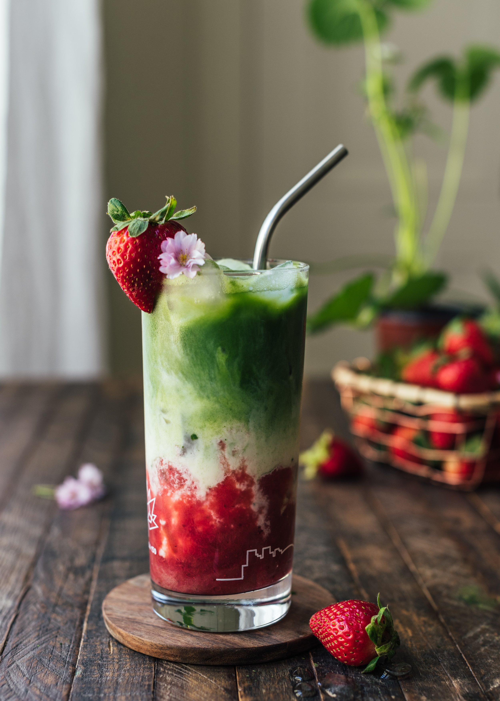

milky strawberry matcha~

Full recipe credits to Sonia's Strawberry Matcha Iced Latte.
Description:
Once Spring hits, this gorgeous STRAWBERRY MATCHA ICED LATTE is on repeat from now into the summer months while strawberries are sweet and bountiful! The layers of strawberry sauce, cold creamy oat milk and grassy matcha is heaven in a tall glass.
Ingredients:
- 2tsp Matcha powder
- ¼ C hot water
- ¼ C quick strawberry jam
- 1 C ice
- 1 C unsweetened oat milk or other milk of choice
- Optional sweetener such as maple syrup
Steps:
- In a small bowl, add hot water to matcha powder
- Whisk until frothy and no lumps remain
- Add ¼ cup of strawberry sauce into bottom of a tall glass
- Add ice cubes
- Pour and fill with oat milk
- Drizzle the matcha mixture on top
- Stir and enjoy!